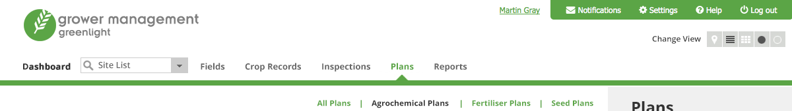

The main navigation sits at the top of the page in the header. A green horizontal line seperates this from the content below. Secondary navigation sits within a grey sidebar on the right hand side of each page.
Much of the page structure is repeated throughout the application.
Some applications (Grower Management) have a list of buttons to change the view preferences. This toggles between Map view, List view, Tile view and then default White on Black or White on Black.

Anchor links within the page are green #5ba546 which are underlined on rollover.
Further details can be seen in the buttons section and the form elements section.